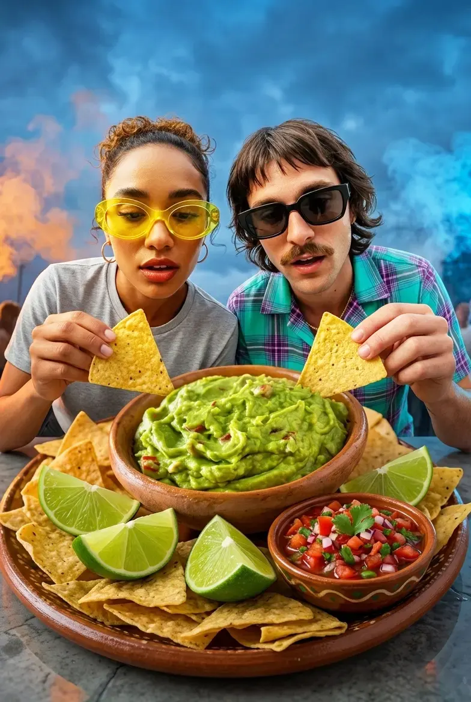

Guacamole Cremosa
Abacate Hass, limão e jalapeño no ponto certo.
🧂 Ingredientes
- 2 abacates maduros do tipo Hass
- 2 colheres (sopa) de suco de limão taiti fresco
- 1/4 de xícara de coentro fresco finamente picado
- 1/4 de xícara de cebola roxa em cubos mínimos
- 1/2 pimenta jalapeño sem sementes e membranas, bem picada
- 1/4 de colher (chá) de sal marinho
👨🍳 Modo de Preparo
- Corte os abacates ao meio, descarte os caroços e transfira a polpa para uma tigela funda.
- Verta o suco de limão e o sal imediatamente sobre a polpa. Amasse com um garfo, preservando pedaços rústicos.
- Adicione a cebola roxa, a jalapeño e o coentro. Incorpore delicadamente com uma espátula. Sirva imediatamente.
💡 Dica do Chef
O contato imediato do suco cítrico com o fruto inibe a oxidação enzimática, preservando a cor verde viva e o perfil aromático fresco por horas.